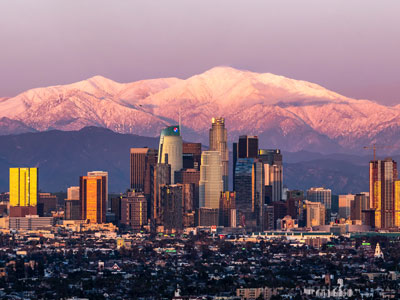
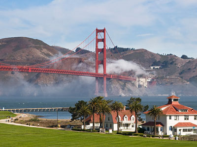
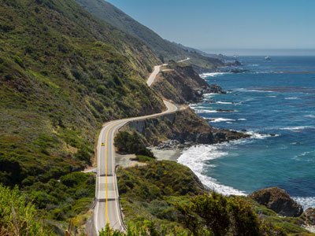
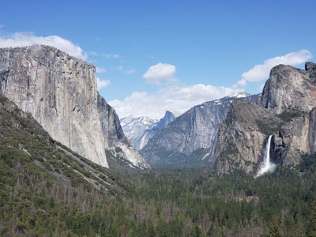
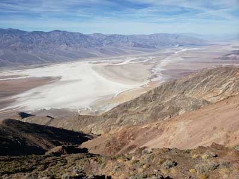
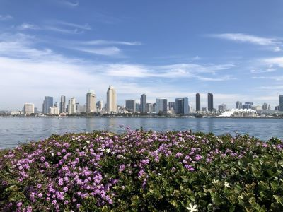
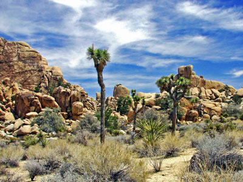
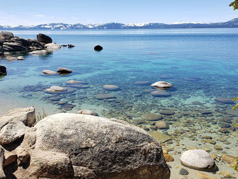
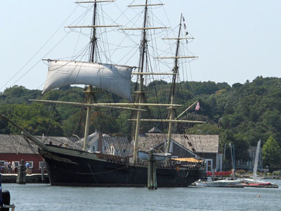
PortableNYCTours, CC BY-SA 4.0, via Wikimedia Commons; Image Size Adjusted
.jpg){kind=link}
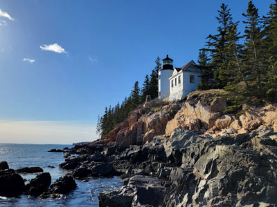
Anthony Quintano from Hillsborough, NJ, United States, CC BY 2.0, via Wikimedia Commons; Image Size Adjusted
.jpg){kind=link}
bryan..., CC BY-SA 2.0, via Wikimedia Commons; Image Size Adjusted
.jpg){kind=link}
Massachusetts
Museum complex comprises 26 interconnected buildings housing 45 permanent exhibition halls, in addition to a planetarium and a library
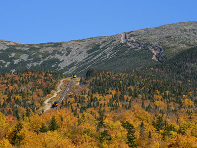
Rhododendrites, CC BY-SA 4.0, via Wikimedia Commons; Image Size Adjusted
.jpg){kind=link}
New Hampshire
16.3-acre complex of buildings houses nationally and internationally renowned performing arts organizations including the New York Philharmonic, the Metropolitan Opera, and the New York City Ballet
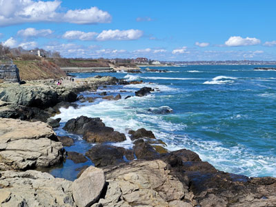
TomasEE, CC BY 3.0, via Wikimedia Commons; Image Size Adjusted
.jpg){kind=link}
Rhode Island
Largest art museum in the United States. Its permanent collection contains over 2 million works, divided among 17 curatorial departments
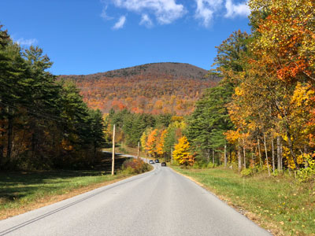
Jdforrester, CC BY 4.0, via Wikimedia Commons; Image Size Adjusted
{kind=link}
Vermont
Aerial tramway in New York City that spans the East River and connects Roosevelt Island to the Upper East Side of Manhattan
Ajay Suresh from New York, NY, USA, CC BY 2.0, via Wikimedia Commons; Image Size Adjusted
.jpg){kind=link}
Delaware
Theatrical performances which are presented in the 41 professional theatres, located in the Theater District and the Lincoln Center along Broadway
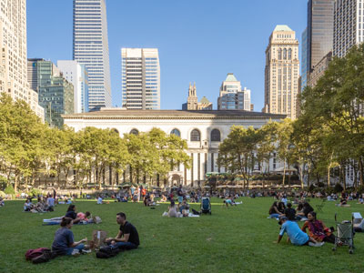
ajay_suresh, CC BY 2.0, via Wikimedia Commons; Image Size Adjusted
.jpg){kind=link}
Maryland
9.6-acre (39,000 m2) public park in Midtown Manhattan where the eastern half is occupied by the Main Branch of the New York Public Library and the western half contains a lawn, and shaded walkways
Misterweiss at English Wikipedia, Public domain, via Wikimedia Commons; Image Size Adjusted
{kind=link}
New Jersey
Art Deco skyscraper in the Turtle Bay neighborhood on the East Side of Manhattan is the tallest brick building in the world with a steel framework
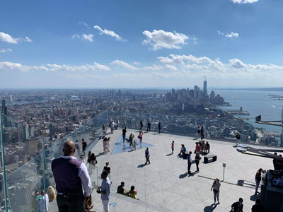
Hypnotoad78, CC BY-SA 4.0, via Wikimedia Commons; Image Size Adjusted
{kind=link}
New York
Outdoor terrace jutting 80 feet outward south, providing panoramic views of Manhattan and the Hudson River
Pennsylvania
Commuter rail terminal in Midtown Manhattan known for its distinctive architecture and interior design that have earned it several landmark designations
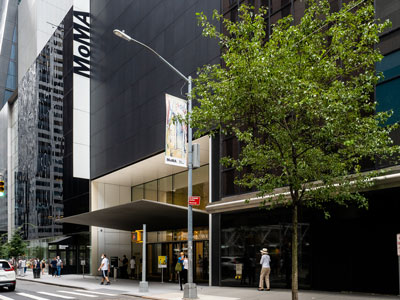
ajay_suresh, CC BY 2.0, via Wikimedia Commons; Image Size Adjusted
_(51395759113).jpg){kind=link}
Washington DC
Art museum located in Midtown Manhattan is often identified as one of the largest and most influential museums of modern art in the world
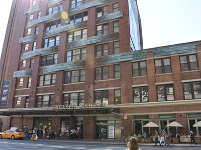
MusikAnimal, CC BY-SA 4.0, via Wikimedia Commons; Image Size Adjusted
{kind=link}
Florida
Food hall, shopping mall, office building and television production facility located in the Chelsea neighborhood of Manhattan
Georgia
Neighborhood in Lower Manhattan is the home to the highest concentration of Chinese people in the Western Hemisphere and is one of the oldest Chinese ethnic enclaves
Sam valadi, CC BY 2.0, via Wikimedia Commons; Image Size Adjusted
{kind=link}
North Carolina
102-story Art Deco skyscraper in Midtown Manhattan
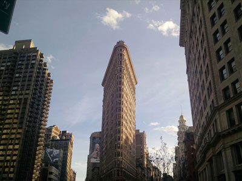
PortableNYCTours, CC BY-SA 4.0, via Wikimedia Commons; Image Size Adjusted
.jpg){kind=link}
South Carolina
Triangular 22-story, 285-foot-tall (86.9 m) steel-framed landmarked building located in the eponymous Flatiron District neighborhood of Manhattan
Virginia
Neighborhood on the west side of Lower Manhattan known as an artists' haven, bohemian capital, cradle of the modern LGBT movement, and the East Coast birthplace the Beat and '60s counterculture movements

Jeff P from Berkeley, CA, USA, CC BY 2.0, via Wikimedia Commons; Image Size Adjusted
.jpg){kind=link}
West Virginia
Small, fenced-in private park and the surrounding neighborhood that is referred to also as Gramercy, in Manhattan
Alabama
Memorial and museum in New York City commemorating the September 11, 2001 attacks
Arkansas
25-acre public park located at the southern tip of Manhattan Island facing New York Harbor containing multiple monuments
Kentucky
Oldest public park in New York City
Louisiana
Bronze sculpture depicting a bull, the symbol of aggressive financial optimism and prosperity
Mississippi
Island in New York Harbor that was the busiest immigrant inspection station in the United States and is now a national museum of immigration
Oklahoma
Historic building in the Financial District where the colonial Stamp Act Congress met to draft its message to King George III claiming entitlement to the same rights as the residents of Britain and other historcial events
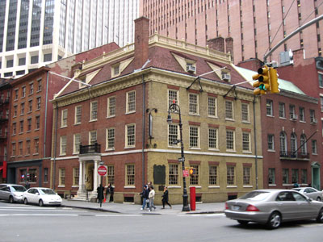
Jim.henderson, Public domain, via Wikimedia Commons; Image Size Adjusted
{kind=link}
Tennessee
Museum and restaurant in the Financial District of Lower Manhattan that played a prominent role in history before, during, and after the American Revolution

Momos, CC BY-SA 3.0, via Wikimedia Commons; Image Size Adjusted
{kind=link}
Texas
Located at the center of City Hall Park in the Civic Center area of Lower Manhattan, the building is the oldest city hall in the United States that still houses its original governmental functions
Illinois
Southernmost bridge connecting Manhattan Island and Long Island is a major tourist attraction since its opening and an icon of New York City
Indiana
85-acre park on the Brooklyn side of the East River includes Main Street Parks, historic Fulton Ferry Landing, Piers 1-6, Empire Stores and the Tobacco Warehouse

MusikAnimal, CC BY-SA 4.0, via Wikimedia Commons; Image Size Adjusted
.jpg){kind=link}
Michigan
Peninsular neighborhood and entertainment area in the southwestern section of Brooklyn

Minnesota
Short for Down Under the Manhattan Bridge Overpass, a neighborhood of Brooklyn remade into an upscale residential and commercial community for art galleries, and currently a center for technology startups
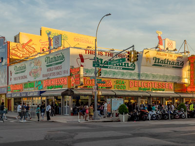
Ajay Suresh from New York, NY, USA, CC BY 2.0, via Wikimedia Commons; Image Size Adjusted
.jpg){kind=link}
Ohio
Chain of fast food restaurants specializing in hot dogs. The original Nathan's restaurant stands at the corner of Surf and Stillwell Avenues in the Coney Island neighborhood of the Brooklyn

The All-Nite Images from NY, NY, USA, CC BY-SA 2.0, via Wikimedia Commons; Image Size Adjusted
.jpg){kind=link}
Wisconsin
Museum displaying historical artifacts of the New York City Subway, bus, and commuter rail systems in the greater New York City metropolitan region
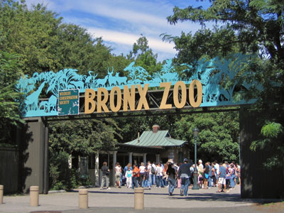
Postdlf, CC BY-SA 3.0, via Wikimedia Commons; Image Size Adjusted
{kind=link}
Iowa
One of the largest zoos in the United States by area and is the largest metropolitan zoo in the United States by area
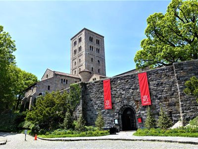
Joyofmuseums, CC BY-SA 4.0, via Wikimedia Commons; Image Size Adjusted
{kind=link}
Kansas
Museum in Upper Manhattan, specializing in European medieval art and architecture, with a focus on the Romanesque and Gothic periods
Joyofmuseums, CC BY-SA 4.0, via Wikimedia Commons; Image Size Adjusted
Missouri
Museum in Upper Manhattan, specializing in European medieval art and architecture, with a focus on the Romanesque and Gothic periods
Joyofmuseums, CC BY-SA 4.0, via Wikimedia Commons; Image Size Adjusted
Nebraska
Museum in Upper Manhattan, specializing in European medieval art and architecture, with a focus on the Romanesque and Gothic periods
Joyofmuseums, CC BY-SA 4.0, via Wikimedia Commons; Image Size Adjusted
North Dakota
Museum in Upper Manhattan, specializing in European medieval art and architecture, with a focus on the Romanesque and Gothic periods
Joyofmuseums, CC BY-SA 4.0, via Wikimedia Commons; Image Size Adjusted
South Dakota
Museum in Upper Manhattan, specializing in European medieval art and architecture, with a focus on the Romanesque and Gothic periods
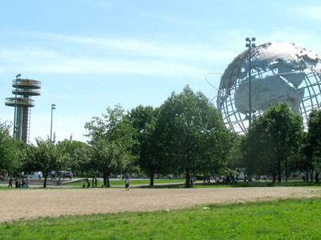
Eden, Janine and Jim, CC BY 2.0, via Wikimedia Commons; Image Size Adjusted
{kind=link}
Arizona
Public park in the northern part of Queens is the fourth-largest public park in New York City
Eden, Janine and Jim, CC BY 2.0, via Wikimedia Commons; Image Size Adjusted
California
Public park in the northern part of Queens is the fourth-largest public park in New York City
Eden, Janine and Jim, CC BY 2.0, via Wikimedia Commons; Image Size Adjusted
Colorado
Public park in the northern part of Queens is the fourth-largest public park in New York City
Eden, Janine and Jim, CC BY 2.0, via Wikimedia Commons; Image Size Adjusted
Hawaii
Public park in the northern part of Queens is the fourth-largest public park in New York City
Eden, Janine and Jim, CC BY 2.0, via Wikimedia Commons; Image Size Adjusted
Nevada
Public park in the northern part of Queens is the fourth-largest public park in New York City
Eden, Janine and Jim, CC BY 2.0, via Wikimedia Commons; Image Size Adjusted
Arizona
Public park in the northern part of Queens is the fourth-largest public park in New York City
Eden, Janine and Jim, CC BY 2.0, via Wikimedia Commons; Image Size Adjusted
Utah
Breathtaking travel destination known for its dramatic red rock landscapes, world‑class national parks, outdoor adventure year‑round, and a rich blend of natural beauty and Western culture.
Eden, Janine and Jim, CC BY 2.0, via Wikimedia Commons; Image Size Adjusted
Alaska
State known for its dramatic ice formations, vast wilderness, and rich indigenous culture.
Eden, Janine and Jim, CC BY 2.0, via Wikimedia Commons; Image Size Adjusted
Idaho
State known for its dramatic mountain landscapes, world‑class skiing, outdoor adventure year‑round, and a rich blend of natural beauty and Western culture.
Eden, Janine and Jim, CC BY 2.0, via Wikimedia Commons; Image Size Adjusted
Montana
State known for its dramatic mountain landscapes, world‑class skiing, outdoor adventure year‑round, and a rich blend of natural beauty and Western culture.
Eden, Janine and Jim, CC BY 2.0, via Wikimedia Commons; Image Size Adjusted
Oregon
State known for its dramatic mountain landscapes, world‑class skiing, outdoor adventure year‑round, and a rich blend of natural beauty and Western culture.
Eden, Janine and Jim, CC BY 2.0, via Wikimedia Commons; Image Size Adjusted
Washington
Public park in the northern part of Queens is the fourth-largest public park in New York City
Eden, Janine and Jim, CC BY 2.0, via Wikimedia Commons; Image Size Adjusted
Wyoming
Public park in the northern part of Queens is the fourth-largest public park in New York City